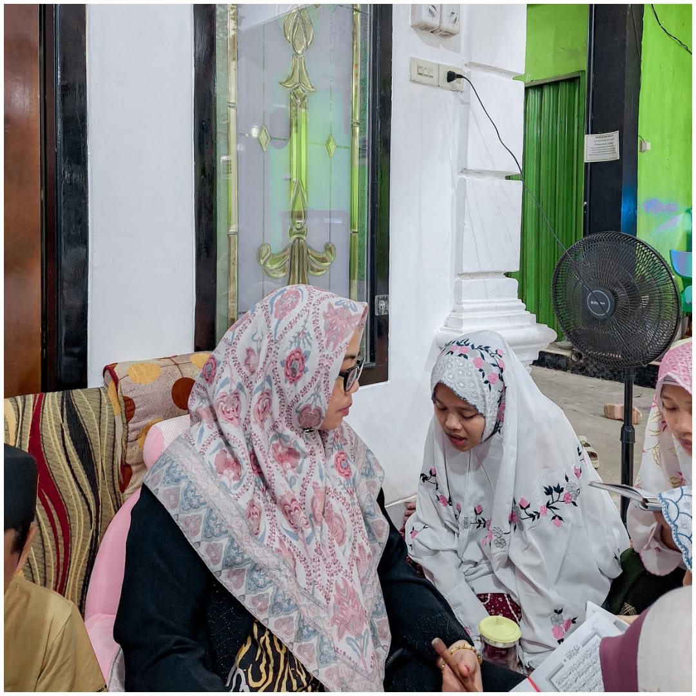

Pondok Pesantren Roudlotul Qur'an (PPRQ)
Pondok Pesantren Roudlotul Qur'an (PPRQ)
Menjadikan Santri yang Multitalenta serta menanamkan jiwa Qur'ani, serta Istiqomah menjaga dalam setiap hafalannya, mendalami ilmu yang terkandung dalam al-Qur'an dengan metode Tahfidzul Qur'an dan Tartilul Qur'an Bin Nadhor.
Mengedepankan akhlaqul karimah dan mencetak Santri yang ilmiyah amaliyah, amaliyah ilmiyah melalui akhlaqul karimah yang sesuai dengan nilai-nilai al-Qur'an, sehingga merupakan tarbiyah terhadap pembentukan karakter bangsa yang berkualitas.


Khataman Juz Amma

Khataman Bin Nadzor

Khataman Bil Ghoib

Dokumentasi Ujian Kenaikan Juz
Dokumentasi Ziyadah

Dokumentasi Tasmi'


| Program | Keterangan | Waktu |
|---|---|---|
| Juz Amma | Mulai dari surah Al-Lail – surah An-Naba | 05.15 WIB s/d Selesai |
| Surat Penting | Surah Yasin, Surah Al-Waqiah, Surah Al-Mulk | — |
| Bin Nadzor | - | 05.15 WIB |
| Bil Ghoib | - | 18.30 WIB |
| Program | Keterangan | Waktu |
|---|---|---|
| Fasholatan | - | 05.15 WIB s/d Selesai |
| Juz Amma | s/d Surah Ad-Dhuha | — |
| Sorogan Bin Nadzor | Kelas Tekror | 05.15 WIB & 18.20 WIB |